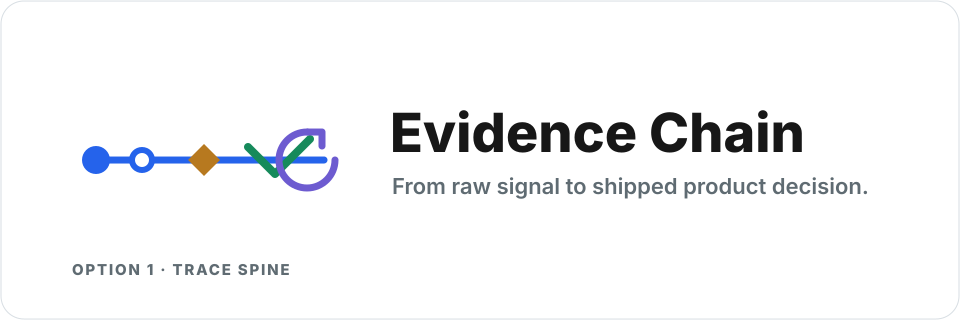

Evidence Chain Logo Options
Three visual directions for the mark and lockup. All use the same product thesis: raw signal becomes a shipped decision through an inspectable audit trail.

Three visual directions for the mark and lockup. All use the same product thesis: raw signal becomes a shipped decision through an inspectable audit trail.
